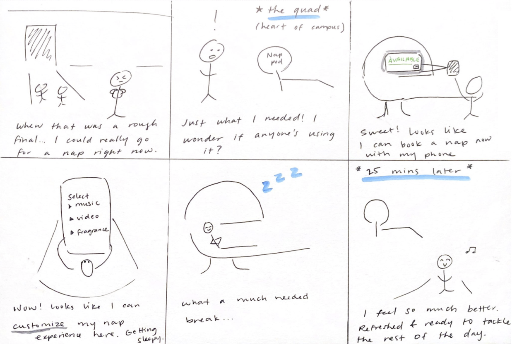
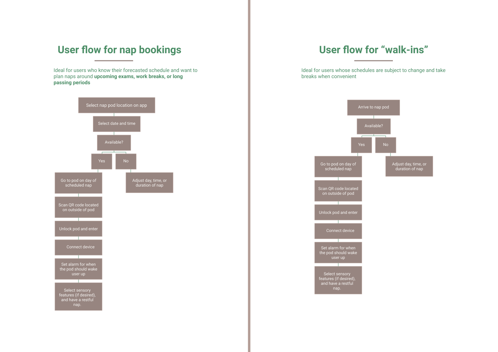
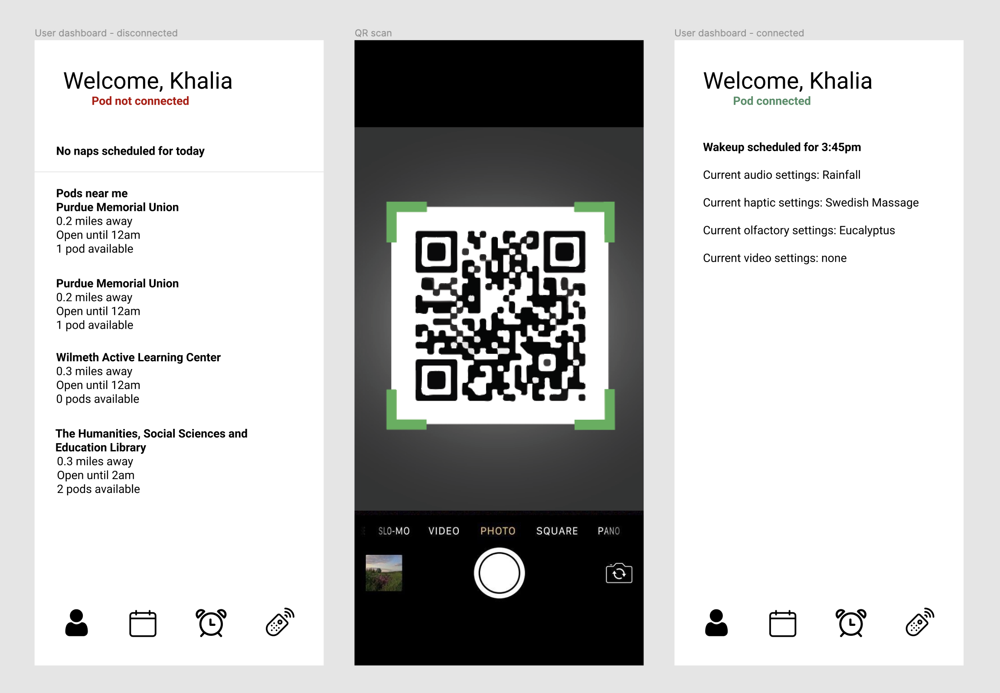
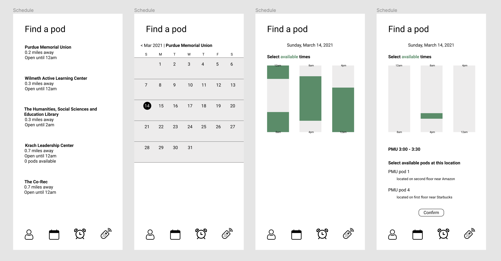
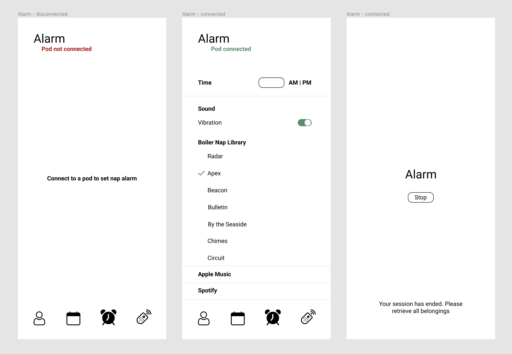
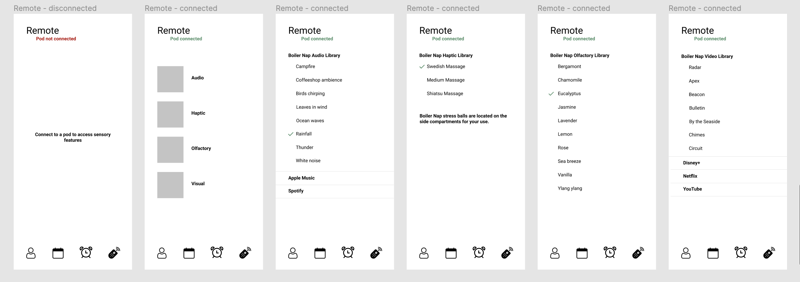

podzZz is a nap pod and mobile app that integrates audio, haptic, olfactory, and visual features to help college students de-stress. Targeted towards Purdue University students for its initial launch, we designed the pod to be placed in multiple locations on campus and accessible at all times a day.
In this project, I worked closely with five students and took the lead in user research and mobile app design.
We began with a contextual inquiry study at Wilmeth Active Learning Center, a popular study spot for Purdue students. We took note on general student behavior regarding sleep and study habits.
We also conducted a comparative analysis to understand the scope of solutions for sleep deprivation. Products included various sleep apps like Sleep Cycle and Relax Melodies, wearbles like eye masks, headphones, pillows, and weighted blankets, and nap pods.
These methods helped us understand student sleep and study habits, in which we identified key insights:
With these insights in mind, we created personas to empathize with our user group and fully understand their pain points.
Reviewing our personas' experiences, we identified design considerations to be addressed:
Reviewing our design considerations and persona pain points, we narrowed our ideation to focus on naps, as the problem of finding a quiet and comfortable place to rest amid a busy day was a recurring theme among our user group. Therefore, we storyboarded napping-on-campus scenarios for students:

We arrived at the solution of a sensory nap pod, podzZz, to be placed in multiple campus locations and offer fatigued students slight reprieve from their busy schedules. A quick 15-30 minute power nap would rejuvenate students' energy without disrupting their schedules or cause them to leave campus between classes or work.
Additionally, as we found most nap pods to offer a place to rest and listen to music in our research, we ideated on implementing audio, haptic, olfactory, and visual features within the pod to create an immersive, sleep-inducing experience.
We realized that users needed a way to control the sensory settings of the pod, and what better way to do so than through their personal devices? So, via Bluetooth connection, users' phones act as a remote control for the pod to customize all their sensory needs. This user flow demonstrates the progression of our cross-channel solution from a scheduled or walk-in perspective.

Next, we transitioned to low fidelity mockups to illustrate key features in the podzZz app.
1. User dashboard

2. Scheduling a nap session

3. Setting an alarm for the nap

4. Using sensory features in pod

We mocked up a podzZz nap pod to fully visualize sensory features.
1. External pod design and features
We designed an elongated, low-profile pod to sit in various buildings around campus. This design is space-saving and utilitarian in its simplicity, offering refuge from the crazy stressors of everyday student life.
At a vacant pod, users can scan the unique QR code located on the exterior, unlocking and opening it for use. Scanning the code also connects the user's phone to Bluetooth, and enables them to control sensory features during their nap through the podzZz app. Additionally, the locker at the base of the pod provides storage for users' belongings.
2. Internal pod design and features
Inside the pod, users find a variety of sensory features for maximum relaxation.
Other internal features:
podzZz was my first ever UX project, and therefore has a very special place in my heart. That being said, there are several things I would've done differently, now as a more experienced designer.
Firstly, my team and I's mindset was very solution-oriented, rather than problem-oriented. Don't get me wrong, sleep deprivation is a very real predicament among college students. Yet we didn't spend a dedicated time in ideation and brainstorming, instead dreaming up fun and wacky ways to solve our problem. Ideation, and our eventual final design, was done without constraints, resulting in somewhat of a feature bloat and making real-world implementation difficult.
Additionally, due to our limited knowledge of UX research methods, we mainly gleaned insights from our contextual inquiry study and comparative analysis. I believe this project would've greatly benefitted from user interviews or diary studies, as they would provide first-hand accounts of sleep deprivation and how students cope with it.
Lastly, regarding usability testing, I imagine an immersive and physical method of gaining user feedback—like bodystorming or Wizard of Oz testing—would provide rich data into users' mental models, understanding, and comfortability using podzZz.